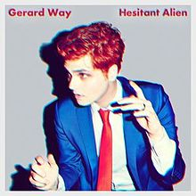

My Chemical Romance Broke Up 5 Years Ago and We're Still Not Okay
March 22, 2013
Their famous last words came on March 22, 2013, when they posted a heartfelt note on their Facebook. "Being in this band for the past 12 years has been a true blessing," they began. "We’ve gotten to go places we never knew we would. We’ve been able to see and experience things we never imagined possible. We’ve shared the stage with people we admire, people we look up to, and best of all, our friends. And now, like all great things, it has come time for it to end. Thanks for all of your support, and for being part of the adventure." Well that adventure has been over for five years now, and the ghost of MCR still haunts us to this day.
Hesitant Alien

Track List
The Burea
Action Cat
no Shows
Brother
Millions
Zero Zero
Juarez
Drugstore Perfume
Get The Gang Together
How It's Going To Be
Maya The Psychic
Television All The Time
About
Hesitant Alien is the debut album by former My Chemical Romance lead-singer Gerard Way. It includes the singles “Action Cat”, “No Shows”, and “Millions.” It was released on September 30, 2014, and peaked at 16 on the Billboard 200. The only charting single was “No Shows”, which peaked at 42 on Billboard’s Hot Rock Digital Songs.
Where Are They Now
Gerard was the longtime face of MCR, but now he's working behind-the-scenes... on something SUPER cool. Gerard is now a writer for the DC Universe comics Doom Patrol. In March 2018, Gerard revealed that he's also working on new music, but that pissed off his comic fans, who want the new Doom Patrol ASAP!
Mikey was the bassist and little brother of Gerard. Things were really rough for him after the split, as he explained to Billboard in 2017. “The band ended, and I was going through a divorce at the same time. I do the most stressful things in clumps. The way I knew how to deal with that, through life, was to self-medicate so that’s what I did. Mikey checked into rehab, and now he's totally sober! He married a new girl, and they have a beautiful baby girl! He and fellow former member David Debiak startyed an alt/indie band called Electric Century together.
Former guitarist Frank is making his own punk music under the name Frank Iero and the Patience, but he has a far more important job, too! Frank is a father of three, still married to Jamia Nestor since 2007 and they're happier than ever!
Former drummer Ray dropped his own solo album called Remember the Laughter. He spent three years after the split in his home working on it, and he's pretty darn proud! After dropping the album he thanked his son for "always being there to put a smile on Daddy's face, and being my first and best fan," and his wife, for "being an endless source of inspiration, and for letting me bounce ideas off of you and always telling me the truth."
Bob was drummer from 2004-2010, but after leaving he had some harsh things to say. He claimed that he was suicidal after being kicked out, and he left the music world to become a real estate agent.
James, the touring keyboardist for the band, is now 42 years old and still working on his own project Reggie and the Full Effect. He just dropped a new album called Reggie41 and his fans are still obsessed.